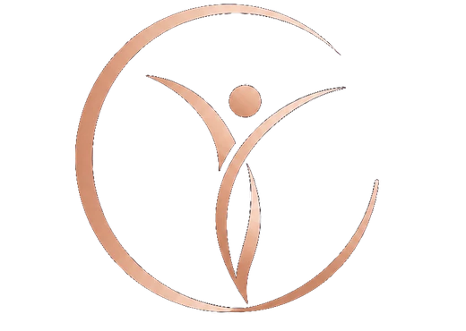

01
Give
$10 a month into one global fund. Small enough not to think about. Large enough, together, to change the shape of someone’s year.

Pre-launch · Founding circle
Sometimes the only thing standing between a woman and her freedom is $800. A deposit. A lawyer. A plane ticket. A month of childcare. Alone, that number is a wall. Together, at $10 a month, it is nothing at all.
The Freedom Circle doesn’t exist yet — and that’s the point. We’re gathering 10,000 founding women first. When we reach that number, we register the fund, publish the legal structure, and open the first month of contributions. Not a cent is collected before then.
Free to join · No payment now · Leave any time
0 women signed up
Goal 10,000
This number is the real count of people on the waitlist. It is updated by hand, not simulated.
The idea
Most giving asks you to send money into the dark and hope. This is different. You put a small amount into a shared circle every month. You help decide where it goes. And if the day ever comes when your own life falls apart — you can turn to the circle too.
Ten dollars is the price of two coffees. It is also, pooled across a million women, one of the largest sources of direct emergency funding for women on earth.
01
$10 a month into one global fund. Small enough not to think about. Large enough, together, to change the shape of someone’s year.
02
Every month you allocate your voice across the categories — safety, housing, legal, education, wherever it’s needed most. You are not a donor. You are a member.
03
Anyone can ask — members and non-members alike. Not a promise of money, but an open door. No woman has to be too proud, or too afraid, to knock on it.
The loop
Money moves in one direction in charity: down. Here it moves around. The woman who gives this year may be the woman who asks next year, and the circle holds either way. That is the whole design.
No one is a case file. No one is a beneficiary. Everyone is a member.
What we fund
We don’t fund “need” in the abstract — that category has no bottom. We fund one specific thing: the sum of money that stands between a woman and her ability to act for herself. The test for every grant is simple. Does this money materially increase her freedom or her safety?
Deposits, first month’s rent, emergency stay, relocation from an unsafe home.
Divorce, custody, protective orders, immigration status, representation.
Training, licences, certification, childcare that makes going to work possible.
Urgent medical care, mental health support, recovery after crisis.
A ticket home, restoring lost papers, the mobility a new start requires.
Grants are sized to the actual need. Wherever it is safer to do so, funds are paid directly to the landlord, the lawyer, the clinic, the school — not handed over as cash.
How it works
Any member can apply. So can a woman referred by one of our partner organisations. The form asks what she needs, how much, and by when.
An accredited local NGO — people who know the country, the language and the risks — confirms the situation on the ground. No decision is made from a distance.
Software helps sort applications by urgency and flags duplicates and fraud signals. It never issues a rejection. Every decision that affects a woman is made by a person.
Members allocate their monthly voice across categories. That shapes how the pool is divided — it does not expose any applicant’s identity to the membership.
Through the local partner, and where possible straight to the provider: the deposit to the landlord, the fee to the lawyer, the ticket to the airline.
Monthly: how much came in, how much went out, in which categories, in which countries, and what it cost to run. Consented stories, anonymised where safety requires it.
How we intend to be trusted
Accounts published monthly. Every category of spend, every operating cost, the ratio between them. If we can’t defend a line item in public, we shouldn’t be spending it.
We do not parachute into countries we don’t understand. Grants are delivered through accredited women’s organisations who already do this work and are accountable in their own jurisdictions.
Every application is verified by people with local expertise. An applicant’s safety, dignity and privacy come before our desire for a good story — always, and without exception.
We collect the minimum: your name, email, country. We never sell it, never share it, and we will delete it on request. If the fund never launches, we tell you and we delete the list.
Questions
No. Nothing. We are not asking for a card, a bank detail or a payment of any kind. Joining the waitlist costs nothing and commits you to nothing. If and when the fund is registered, you’ll get an email explaining exactly what has been set up — and you decide then whether to contribute.
No — and we want to be blunt about that, because the honest answer matters more than the appealing one. A guarantee of payout would make this an insurance product, which is a regulated activity with entirely different obligations.
It also cuts the other way, and this part matters just as much: you never have to give in order to ask. Support is open to every woman, member or not. Contributing does not move you up a queue and does not weigh in your favour. Every application is judged on its own facts, against criteria published in advance.
A grants committee within the registered nonprofit, working from verifications carried out by accredited local partner organisations. Members shape priorities by allocating their monthly voice across categories. Software helps sort and flag applications — it never issues a refusal. Any decision that goes against an applicant is made by a human being.
In the accounts of the registered nonprofit entity, subject to that jurisdiction’s charity regulation, independently audited, with monthly public reporting. The full structure will be published before the first contribution is taken — not after.
Some of it has to: payment processing, verification, fraud prevention, audit, partner organisations, technology, support. Any fund claiming otherwise is either subsidised elsewhere or not telling you the whole story. We will publish the real percentage every month and work to bring it down. Our planning target is to keep it at or under 15%.
Anyone who supports the mission can contribute. Grants go to women. The name of the thing is the promise of the thing.
Because a fund with a hundred members is a good intention, and a fund with ten thousand is an institution that can afford proper governance, real legal structure, audit and partner relationships from day one. Registering earlier would mean cutting corners on exactly the things that make a fund trustworthy.
Please don’t wait for us. We are not operating yet and cannot help anyone today. If you are in immediate danger, contact your local emergency services. For ongoing support, national domestic violence helplines and local women’s organisations exist in most countries and can act now, which we cannot.
The Freedom Circle is the full name, and it’s the one that will appear on the registration, the constitution and every legal document. FRDM Circle is the short form we use day to day — on the site, in the handle, on anything that has to fit in a small space.
Same organisation, same money, same rules. If you ever see them used interchangeably, that’s why.
One email to hello@frdmcircle.org, or one click in any message we send. We’ll remove you and delete your data. There is no retention flow, no “are you sure”, no three screens of friction. A circle you can’t walk out of isn’t a circle.
Join the circle
Be one of the first 10,000. It costs nothing today. It tells us this should exist.
You’ll get one short email confirming you’re on the list. After that, we write roughly once a month: how many women have joined, what we’ve figured out about the legal structure, which partner organisations are talking to us, and what’s still unsolved.
When we hit 10,000, you’ll be the first to know — and the first invited in.
Check your inbox — a confirmation is on its way. If it isn’t there in a few minutes, look in promotions or spam.
The fastest way to get to 10,000 is one woman telling another. If you know someone who’d want this, send it to her.